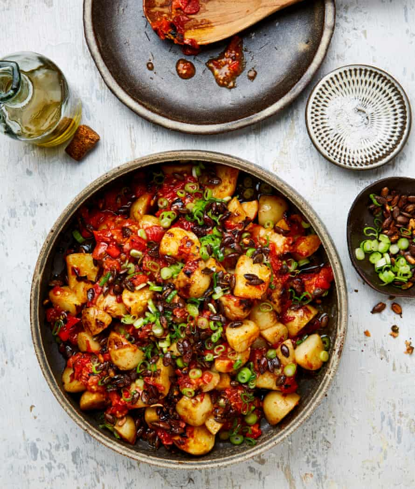

Potato salad with charred tomato and orange salsa

The salsa with these potatoes is inspired by sikil p’ak, a Mayan paste made from toasted pumpkin seeds, charred tomatoes and chillies, orange and cumin. Any excess pumpkin seeds will keep in an airtight jar for two weeks.
For the spicy, sticky seeds
For the charred salsa
Heat the oven to 180C (160C fan)/350F/gas 4. Mix all the ingredients for the seeds with a quarter-teaspoon of salt, spread out on a tray lined with greaseproof paper and bake, stirring every now and again, for 16 minutes, until well toasted and caramelised. Remove and set aside to cool.
Turn the oven to the highest grill setting. Put the tomatoes and chillies on a medium tray, grill near the top of the oven for 16 minutes, until nicely blackened in places, then remove and set aside to cool. Turn off the grill for now.
Put the potatoes in a large saucepan, cover with cold water and bring to a boil. Add plenty of salt, turn down the heat to medium and simmer for about eight minutes, until the potatoes are cooked through but not falling apart. Drain well, then return the potatoes to the pan and add the oil, lime juice and an eighth of a teaspoon of salt.
Roughly chop the charred chillies (remove and discard the seeds and pith, if you prefer less heat) and tomatoes to a salsa consistency, then tip into a bowl and stir in all the remaining salsa ingredients and a half-teaspoon of salt.
Turn the oven to the highest grill setting. Add half the salsa to the potato pan and stir to combine. Tip the other half on to an oven tray, spread out and grill for eight minutes, until it starts to brown on top.
To serve, tip out the potatoes on to a platter and spoon the grilled salsa on top. Scatter over the spring onions and some of the pumpkin seeds (you won’t need them all, so keep any leftovers for snacking on), finish with a drizzle of olive oil and a sprinkle of sea salt, and serve warm.